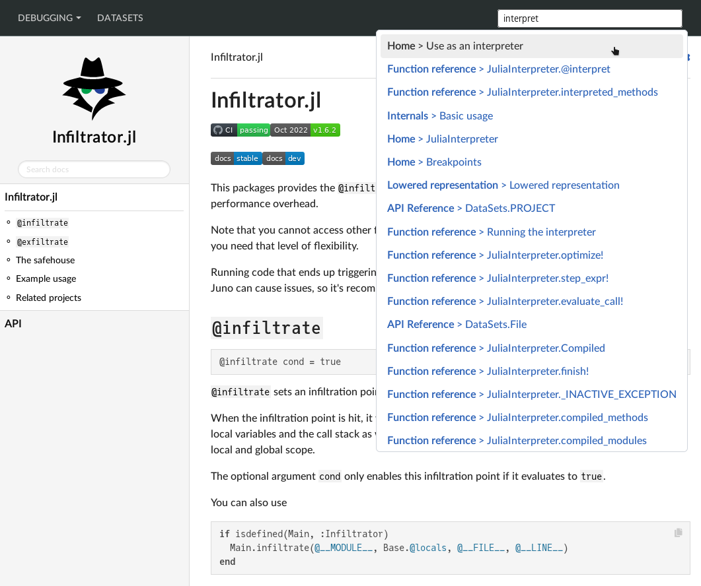

MultiDocumenter
This package aggregates Documenter.jl documentation from multiple sources into one page with a global search bar.
Example usage
using MultiDocumenter
clonedir = mktempdir()
docs = [
MultiDocumenter.DropdownNav("Debugging", [
MultiDocumenter.MultiDocRef(
upstream = joinpath(clonedir, "Infiltrator"),
path = "inf",
name = "Infiltrator",
giturl = "https://github.com/JuliaDebug/Infiltrator.jl.git",
),
MultiDocumenter.MultiDocRef(
upstream = joinpath(clonedir, "JuliaInterpreter"),
path = "debug",
name = "JuliaInterpreter",
giturl = "https://github.com/JuliaDebug/JuliaInterpreter.jl.git",
),
]),
MultiDocumenter.MegaDropdownNav("Mega Debugger", [
MultiDocumenter.Column("Column 1", [
MultiDocumenter.MultiDocRef(
upstream = joinpath(clonedir, "Infiltrator"),
path = "inf",
name = "Infiltrator",
giturl = "https://github.com/JuliaDebug/Infiltrator.jl.git",
),
MultiDocumenter.MultiDocRef(
upstream = joinpath(clonedir, "JuliaInterpreter"),
path = "debug",
name = "JuliaInterpreter",
giturl = "https://github.com/JuliaDebug/JuliaInterpreter.jl.git",
),
]),
MultiDocumenter.Column("Column 2", [
MultiDocumenter.MultiDocRef(
upstream = joinpath(clonedir, "Infiltrator"),
path = "inf",
name = "Infiltrator",
giturl = "https://github.com/JuliaDebug/Infiltrator.jl.git",
),
MultiDocumenter.MultiDocRef(
upstream = joinpath(clonedir, "JuliaInterpreter"),
path = "debug",
name = "JuliaInterpreter",
giturl = "https://github.com/JuliaDebug/JuliaInterpreter.jl.git",
),
]),
]),
MultiDocumenter.MultiDocRef(
upstream = joinpath(clonedir, "DataSets"),
path = "data",
name = "DataSets",
giturl = "https://github.com/JuliaComputing/DataSets.jl.git",
# or use ssh instead for private repos:
# giturl = "git@github.com:JuliaComputing/DataSets.jl.git",
),
]
outpath = joinpath(@__DIR__, "out")
MultiDocumenter.make(
outpath,
docs;
search_engine = MultiDocumenter.SearchConfig(
index_versions = ["stable"],
engine = MultiDocumenter.FlexSearch
)
)
Deployment
Check .github/workflows/deploy.yml and docs/make.jl for an example on how to deploy MultiDocumenter-generated aggregates to a git branch.
The result of that script is available at https://juliacomputing.github.io/MultiDocumenter.jl/.
You can of course also just push the output artefact directly to S3 or some other hosting service.
Warning MultiDocumenter sites can not be deployed on Windows right now, and the
make()function will throw an error. See #70.It is still possible to develop and debug MultiDocumenter sites on Windows if the build script is run interactively (e.g. by
include-ing it into a REPL session).
Docstrings
MultiDocumenter.MultiDocRef — Typestruct MultiDocRefRepresents one set of docs that will get an entry in the MultiDocumenter navigation.
Required arguments:
upstream: the local directory where the documentation is located. Ifgiturlis passed, MultiDocumenter will clone into this directory.name: string used in the MultiDocumenter navigation for this itempath: the URL path under which the contents of upstream is placed
Optional arguments:
giturl: URL of the remote Git repository that will be cloned. If this is unset, thenupstreammust be an existing directory.branch: Git branch ofgiturlwhere the docs will be pulled from (defaults togh-pages)fix_canonical_url: this can be set tofalseto disable the canonical URL fixing for thisMultiDocRef(see alsocanonical_domainformake).
MultiDocumenter.SearchConfig — TypeSearchConfig(index_versions = ["stable"], engine = MultiDocumenter.FlexSearch, lowfi = false)index_versions is a vector of relative paths used for generating the search index. Only the first matching path is considered. engine may be MultiDocumenter.FlexSearch, MultiDocumenter.Stork, or a module that conforms to the expected API (which is currently undocumented). lowfi = true will try to minimize search index size. Only relevant for flexsearch.
MultiDocumenter.make — Methodmake(
outdir,
docs::Vector{MultiDocRef};
assets_dir,
brand_image,
custom_stylesheets = [],
custom_scripts = [],
search_engine = SearchConfig(),
prettyurls = true,
rootpath = "/",
hide_previews = true,
canonical = nothing,
)Aggregates multiple Documenter.jl-based documentation pages docs into outdir.
assets_diris copied intooutdir/assetsbrand_imageis aBrandImage(path, imgpath), which is rendered as the leftmost item in the global navigationcustom_stylesheetsis aVector{String}of relative stylesheet URLs injected into each page.custom_scriptsis aVector{Union{String, Docs.HTML}}. Strings can be relative or absolute URLs, whileDocs.HTMLobjects are inserted as the content of inline scripts.search_engineinserts a global search bar if notfalse. SeeSearchConfigfor more details.prettyurlsremoves allindex.htmlsuffixes from links in the global navigation.rootpathis the path your site ends up being deployed at, e.g./foo/if it's hosted athttps://bar.com/foohide_previewsremoves preview builds from the aggregated documentation.canonical_domain: determines the the schema and authority (domain) of the (e.g.https://example.org) deployed site. If set, MultiDocumenter will check and, if necessary, update the canonical URL tags for each package site to point to the correct place directory. Similar to thecanonicalargument ofDocumenter.HTMLconstructor, except that it should not contain the path component – that is determined fromrootpath.sitemap, if enabled, will generate asitemap.xmlfile at the root of the output directory. Requirescanonical_domainto be set, since the sitemap is determined from canonical URLs.sitemap_filenamecan be used to override the default sitemap filename (sitemap.xml)